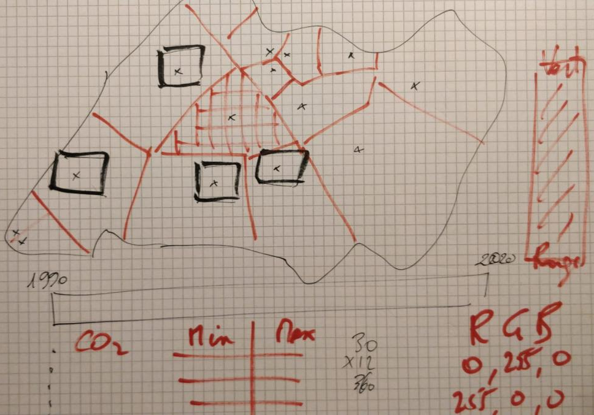
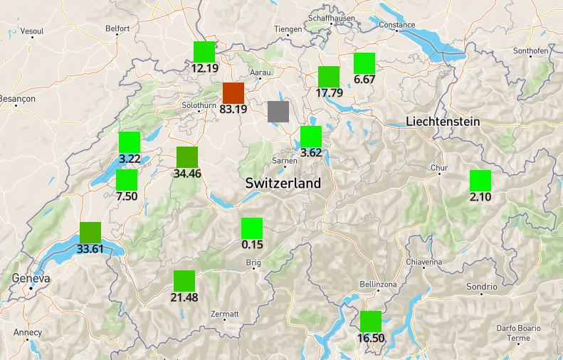
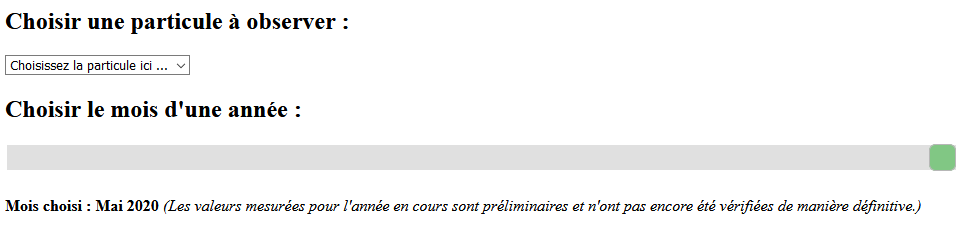
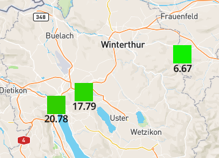

Rapport
1. Introduction
1.1. Contexte
Pour ce mini-projet du cours d'Algorithme Numérique, il est demandé aux étudiants de réaliser un programme de
mathématique appliquée.
Ce dernier doit tenir sur une page HTML et être développé au moyen du langage Javascript
exclusivement.
Ce programme doit également avoir un lien direct avec au moins un des sept chapitres du cours.
Bien que le choix de l'application à proprement parler revienne aux étudiants, le thème générale du projet est
imposé par les enseignants.
Le projet doit ainsi toucher directement ou indirectement au domaine de la «
Santé ».
1.2. Problématique
La pollution dans son ensemble est un facteur bien trop souvent ignoré de la cause de décès chaque année.
Cependant, une étude [1] a montré que la pollution de l'air est, à elle seule, responsable de plus de décès
que le tabac.
Ces chiffres, à la fois stupéfiant et terrifiant, donnent grandement à réfléchir. Ces derniers
donnent une idée de la pollution de l'air actuelle dans le monde.
Mais qu'en est-il de la Suisse ?
Il se trouve que la Confédération Suisse a mis en place le Réseau national d'observation des polluants
atmosphériques (NABEL).
Ce Réseau est un partenariat entre l'Office fédéral de l'environnement (OFEV) et
l'European Monitoring and Evaluation Program (EMEP).
Le programme des mesures effectués par ce laboratoire est
établi sur 10 ans, de l'année 2020 à l'année 2030 [2].
À l'aide des 16 stations de mesures [3],
la présence de plusieurs types de particules [4] peuvent être relevées chaque jour sur l'ensemble du
territoire Suisse.
Ces données journalières sont ensuite mises à la disposition du public par la Confédération Suisse [5] et
peuvent être obtenues sous forme de fichier CSV.
L'idée du projet est donc, en toute logique, de s'approprier
ces données et de les afficher de manière intéressante dans le temps et géographiquement.
2. Solution proposée
2.1. Idée en lien avec le cours d'Algorithme Numérique
L'idée est de récupérer les données de la Confédération depuis la date la plus ultérieure possible (soit le 1er
Janvier 2000),
pour chacune des 16 stations disposées en Suisse et pour 5 des particules les plus notables :
-
L'Ozone (O3) [en mg/m3]
-
Le Dioxyde d'azote (NO2) [en mg/m3]
-
Le Dioxyde de soufre (SO2) [en µg/m3]
-
Le Monoxyde de carbone (CO) [en mg/m3]
-
Les particules en suspension de moins de 10µm (PM10) [en mg/m3]
2.1.1. Données mensuelles
Une fois ces données obtenues, il faut les traiter afin de pouvoir les utiliser comme il est souhaité. Dans le cas
de ce projet, ce sont des données mensuelles qui doivent être manipulées (au final).
Cependant, comme les données brutes sont journalières, il faut impérativement déployer de l'Algorithme
Numérique.
Il faut en effet afin effectuer une moyenne pour chaque mois entre Janvier 2000 et Mai 2020 (inclus),
pour chaque particule et ce, pour chacune des stations.
2.1.2. Minimum et maximum
Le programme doit pouvoir choisir une couleur pour une "valeur mensuelle moyenne par particule et par station"
donnée (2.1.3.).
Cela signifie qu'il sera nécessaire de connaître les valeurs minimales et maximales
de chaque type de particule entre TOUTES les stations.
Cette recherche est fondamentalement de l'Algorithme
Numérique.
2.1.3. Index de couleur
Lorsque finalement les moyennes mensuelles (2.1.1.) ainsi que les minimums et maximums (2.1.2.) sont
connues, il est possible
de trouver la fonction qui choisit une couleur entre vert et rouge, suivant une forte
présence ou non de la particule.
Il est donc IMPORTANT de préciser que dans ce programme, l'index de couleur n'indique PAS la dangerosité de la
présence de la
particule, MAIS sa présence (pour un mois et une station en particulier) comparée à la présence
la moins élevée ET la plus élevée enregistrée pour la particule.
Ce programme permet donc de se faire une idée des régions de Suisse où la présence de particule est la plus
forte ou la plus faible comparées AUX VALEURS minimums et maximums de la particule.
2.2. Modèle développé
Le principe est de posséder une carte sur laquelle sont montrées chacune des 16 stations de mesure en Suisse. Ces
dernières sont représentées par un carré d'une certaine couleur (2.1.3.).
L'utilisateur a la possibilité
de choisir à la fois la particule qu'il veut observer en Suisse (liste à choix) et le mois d'observation
(slider).
Alors que les inputs sont modifiés, la carte se met à jour pour automatiquement pour afficher les informations
correspondants aux inputs.

Schéma par M. Stépane Gobron lors d'une discussion
3. Résultats
3.1. Classes et fonctions importantes
Le fonctionnement du programme tourne autour de deux classes principales qui sont Station et Stations.
La classe Station représente une seule station de mesure en Suisse. Lorsqu'elle est instanciée, elle reçoit
le
chemin vers son fichier CSV associée.
Directement à la construction de l'instance, les données sont récupérées
(méthode retrieveDatas) puis la partie Algorithme Numérique commence :
-
La méthode searchMinimums permettant de chercher la valeur minimum de chaque particule de la station
et de conserver le tout dans un attribut de classe de type Array tabMins ;
-
La méthode searchMaximums permettant de chercher la valeur maximum de chaque particule de la station
et de conserver le tout dans un attribut de classe de type Array tabMaxs ;
-
La méthode averagePerMonth permettant de calculer la moyenne mensuelle pour chaque particule de la
station et de conserver le tout un attribut de classe de type Array tabMonthly.
La classe Stations, lors de la construction, s'occupe d'instancier chacune des 16 stations existantes (classe
Station), puis dans les conserver dans un
attribut de classe de type Array tabStation. À la
construction toujours, la partie Algorithme Numérique reprend :
-
La méthode searchMinimums permettant de chercher la valeur minimum de chaque particule parmis les
valeurs minimums de chaque stations (le tout conservé dans tabMins).
-
La méthode searchMaximums permettant de chercher la valeur maximum de chaque particule parmis les
valeurs maximums de chaque stations (le tout conservé dans tabMaxs).
Pour finir, la fonction colorGuesser, prenant en paramètre la valeur de moyenne mensuelle d'une particule,
ainsi que sa valeur minimum et maximum.
Comme son nom l'indique, cette méthode permet de choisir la couleur en
adaptée en fonction des valeurs d'entrées (2.1.3.).
3.2. Figures
Dès lors, le programme permet de visualiser sur la carte les points où la présence en une certaine particule sont
les plus forts ou les plus bas pour un mois donné.
On remarque également aisément si les données pour une station
sont inexistantes pour cette particule et ce mois (carré gris).
La valeur numérique est également affichée
en-dessous pour des indications plus précises pour l'utilisateur.

Résultat affichage
L'utilisateur peut facilement personnaliser sa recherche parmi les données à disposition. À l'aide de la liste à
choix, il peut sélectionner la particule qu'il souhaite observer.
Puis, à l'aide du slider, il peut aisément choisir le mois de son choix entre le mois de Janvier 2000 et le mois de
Mai 2020. Un affichage lui indique également le mois en cours d'observation.

Inputs pour l'utilisateur
L'API qui s'occupe de l'affichage de la carte, ainsi que des carrés de couleur, ne gère pas parfaitement la
proximité
de deux stations.
Ainsi, si elles ne s'affichent pas toutes, il suffit de zoomer à l'aide la molette de la souris
jusqu'à ce qu'elles apparaissent.

Résultat affichage avec zoom
4. Conclusion
Pour conclure, ce mini-projet rempli chacun des critères qui lui était demandé. Il permet efficacement et aisément
de consulter les valeurs mensuels par particule et par station.
L'affichage des résultat sur une carte de la
Suisse offre une visualisation rapide et précise de la présence des particules en Suisse.
L'application met un petit peu de temps à se lancer au début (environ 8 secondes), ce qui est dû à la lecture des
données, ainsi qu'à leur traitement (càd la partie Algorithme
Numérique) qui est effectuée à chaque redémarrage
de la page. Néanmoins, cela n'est pas si dérangeant puisque lorsque la page a fini de chargée, il n'y a plus aucun
traitement
des données à effectuer : Les données sont traitées une fois, puis l'application ne fait plus QUE les
utiliser.
5. Références et outils
5.1. Références
-
Jos Lelieveld, Klaus Klingmüller, Andrea Pozzer, Ulrich Pöschl, Mohammed Fnais, Andreas Daiber, Thomas
Münzel, « Cardiovascular disease burden from ambient air pollution in Europe reassessed using novel
hazard ratio functions », European Heart Journal, Volume 40, Issue 20, 21 May 2019
-
Dr. Richard Ballaman, Dr. Rudolf Weber, Dr. Lukas Emmenegger, Dr. Christoph Hüglin, Dr. Stefan Reimann,
« NABEL Concept de mesures 2020 - 2030 », Office fédéral de l'environnement (OFEV) et European
Monitoring and Evaluation Program (EMEP), 6 Février 2020
-
Le réseau national d’observation des polluants atmosphériques (NABEL), « NABEL-stations de mesures
», Office fédéral de l'environnement (OFEV) et European Monitoring and Evaluation Program (EMEP),
30 Mai 2018
-
Dr. Richard Ballaman, Dr. Rudolf Weber, Dr. Lukas Emmenegger, Dr. Christoph Hüglin, Dr. Stefan Reimann,
« NABEL-Programme de mesures », Office fédéral de l'environnement (OFEV) et European
Monitoring and Evaluation Program (EMEP), Janvier 2020
-
Le réseau national d’observation des polluants atmosphériques (NABEL), « Requête de données NABEL
», https://www.bafu.admin.ch/bafu/fr/home/themes/air/etat/donnees/requete-de-donnees-nabel.html,
Office fédéral de l'environnement (OFEV), 3 Juin 2020 (dernière visite)
5.2. Outils